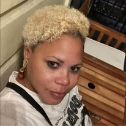

Eleanor R. François
Education
Hampton University, Hampton, VA
Bachelor of Arts - Political Science
Thesis: Honor Killings, Acid Attacks, and Female Genital Mutilation: A Case Study
Wayne State University, Detroit MI
Present - MLIS/School Library Media Specialist
TEACHING EXPERIENCE
Charlotte Amalie High School, Virgin Islands Department of Education 2011-present
Social Studies Teacher
Strengthen students' reading comprehension, writing skills, research, and speaking skills. Support, record, and observe the progress of my class, through development and execution of classroom lessons, assigned coursework, the creation and administration of exams and evaluation of student performance. Other duties include maintaining classroom discipline, offering guidance to students on various matters, and informing parents of student progress, and taking part in after school activities such as the Junior Statesman of America as the teacher advisor.
I have participated in workshops for the Virgin Islands School District, teaching colleagues how to incorporate technology into their classrooms on St. Thomas and St. Croix. Led a workshop on project-based learning using technology at the 2017 NCCE Conference in Portland, OR. I assisted in developing the social studies standards used in the districts of St. Thomas/St. John and St. Croix. Currently, I am working with a cohort of teachers to develop a text for Virgin Islands History
RELATED EXPERIENCE
NMS Imaging, Silver Spring, MD 2004-2008
Employment Network Coordinator
Handled maintenance and software contracts for various federal agencies such as NIH, NSA, and the CIA, as well as various federal credit unions and the Library of Congress. Responsible for review of contracts and ensuring prices were accurate. Issued Invoices to clients for the start or renewal of a contract. Other duties included creating purchase orders for items needed by NMS. Must be familiar with or know about GSA PricingSome text.
Maximus Ticket to Work Program for Social Security Administration, Alexandria, VA 2002-2004
Contracts Administrator
Inform SSI and SSDI recipients of tickets of the benefits of participating in the ticket-to-work program—informed Employment Networks of the program's benefits and the process for becoming an employment network.